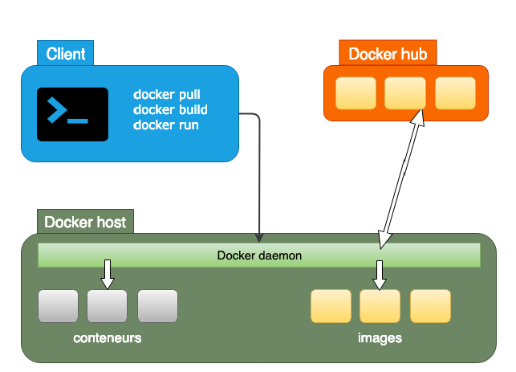
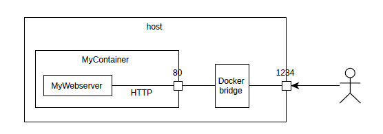

Docker Formation Notes
I took part in a formation for docker technology last week. Here I will list the notes I take during the formation.
De la virtualisation à docker
“Build, Ship, and Run Any App, Anywhere”, docker est un outil de packaging, pour résoudre le problème: Environnements différents, Librairies manquantes, Versions logicielles différentes
=> De la nécessité d’avoir des environnements d’exécution identiques
Différents types de virtualisation
- Scripts d’installation automatisée
- Ansible
- D: il faut temps en temps faire un reset
- Machines virtuelles
- Linux, Windows
- A: Il y a plus de chose dedans: système d’exploitation
- Peut déployer plusieurs applications dans le même VM
- pratique pour tester des logiciels
- D: Consommer beaucoup de ressources
- Lent
- Tâches répétitives
- Configuration manuelle
- Dur d’apporter de la scalabilité
- Conteneurs
- Partager un même noyau de linux (le noyau le plus bas)
- Image embarque l’application et dépendances
- Configuration est portée par l’image
- A: Beaucoup plus léger que le VM
- Meilleur performances
- Plus simple à déployer
- Facilité de configuration/stop/redémarrer/Reproductibilité
- D: Toutes les applications ne peuvent pas tourner dans un conteneur
- Faire confiance aux images téléchargées
La Conteneurisation
- Fonctions Kernel: Namespaces
- mnt (montage):
docker run --v hostpath:dockerpath- The volumn share the same directory
- pid(processus)
- net(réseau)
- ipc(communication inter processus)
- uts(hostnames)
- user(UIDs)
- mnt (montage):
- Cgroups
- Limitation des ressources: CPU, RAM
- Priorisation: ressources processeur, I/O
- Comptabilité: quantité de ressources consommées
- Isolation: séparation par espace de nommage pour les groups
Le positionnement de docker
- Docker ne remplace pas les conteneur, il les utilise s’il existes dans le cache
- Registre d’image: https://hub.docker.com/search
Des outils pour développeurs
- Docker avant le compilation, ensuite compiler dans un docker => enchainer dans le deuxième docker pour fabriquer le containeur
- Choix de version de compilateurs/Système
L’architecture de docker

Le client
- docker [OPTIONS] COMMAND [ARG…]
docker [ –help | -v | –version ]
- docker [OPTIONS] COMMAND [ARG…]
Le daemon (serveur)
- On peut configurer le hostname pour manager le docker dans autre machine, sinon il prends localhost
Docker Hub (dépots d’images)
- Il faut mieux de créer son registry privée (https + login + password)
Fichier de configuration: Situé à ~/.docker/config.json
Les commandes essentielles
Docker commande
- Docker run
- docker run => docker pull (télécharger l’image) + docker create (crée le conteneur) + docker start (lancer le conteneur)
- Lister les images
docker image ls / docker images
- Lister les conteneurs
docker ps / docker container lsdocker ps -a=> lister tous (actifs et arrêtés)
- Lister les logs d’un conteneur
docker logs container_name
- Inspecter un conteneur
docker inspect container_name
- Démarrer un conteneur
docker start --**attach** container_name- attach: bloquer le shell de l’host
- Arrêter/tuer/supprimer un conteneur
docker stop container_namedocker kill container_namedocker rm container_name
- Supprimer conteneur après qu’il ait terminé
docker run --**rm** image_name
Docker Hub
- Registre publique des images officielles fournies par Docker
- Fournit des services supplémentaires aux utilisateurs connectés
- Gestion de repositories, publiques ou privés
- Build automatique d’images depuis un dépôt Git
- Rechercher:
docker search key_word - Télécharger: docker
pull private_sitename/image_name:tagversion
Espace de stockage
2 options pour spécifier points de montage dans le conteneurs: volumns/bind mouts
Volumn
- Stocké sur le filesystem hôte : /var/lib/docker/volumes
- Gérés par
docker volume
1 | $ # Créer un volume nommé "myvol" |
- Montage:
docker run -v myvol:/datadocker run --mount 'source=myvol,target=/data'- Si myvol existe pas, crée automatiquement
Bind mount
- Dossier quelconque du filesystem hôte
- Non géré par Docker, peut donner accès à des fichiers sensibles
- Montage:
docker run -v /home/toto:/datadocker run --mount 'type=bind,source=/home/toto, target=/data'- Source doit exister
Le commande cp
1 | docker cp [OPTIONS] CONTAINER:SRC_PATH DEST_PATH|- |
- Exemple avec arguments -
docker cp dbstore:/dbdata -> dbdata.tar
Networks

Publier le port:
1 | $ # Lancement du serveur nginx |
3 type de réseaux
- Bridge: driver par défaut
- host: permet accès direct aux interface réseau de l’hôte
- none (pour empêche l’accès au réseau)
Bridge
- Permet l’accès à l’extérieur de l’hôte
- Les conteneurs peuvent communiquer entre eux via ce réseaur, mieux éviter de tout brancher sur bridge
- Utiliser un réseau bridge spécifique
- docker network create mynet
- docker run –name mycontainer –network mynet
- Tous les conteneurs branché sur mynet se voient
Création de conteneurs personnalisés
Dockerfile
- FROM : précise l’image de départ
- LABEL : annote l’image
- RUN : exécute une commande pour modifier l’image
- EXPOSE : définit un port utilisé par le conteneur
- ENV : positionne une variable d’environnement de l’image
- COPY et ADD : copient des fichiers/dossiers du hôte vers l’image
- CMD et ENTRYPOINT : définissent le programme lancé au
- démarrage du conteneur
- VOLUME : crée un dossier destiné à être monté sur FS hôte
- WORKDIR : positionne le dossier courant du build
1 | FROM node:18.13.0 |
Construire une image
docker build -t myImage:tagversion.docker image push registry-host:5000/myadmin/myImage:latest
Layers et image cache
- Chaque instruction du Dockerfile crée une image intermédiarie
- Une image intermédiarie est mies en cache pour rebuild rapide
- Faut meux d’uiltiser 1 seule instruction RUN
RUN apt update && apt install … && rm -rf /var/lib/apt/lists/*
ENTRYPOINT et CMD
CMD
Définit la commande lancé par défaut au démarrage
FROM alpine CMD echo Hello <!--code4-->docker build -t hello .docker run hello => Hellodocker run --entrypoint echo Goodbye => Goodbye
Exec Form
FROM ALPINE CMD ["echo", "Hello"] # ou ENTRYPOINT ["echo", "Hello"] <!--code5-->docker build -t hello .docker run hello=> Hello Worlddocker run hello there=> Hello there
Multi-stage build
- Possibilité d’avoir plusieurs FROM dans un Dockerfile
- Chaque FROM commence un stage du build
- => 1 seul Dockerfile suffit pour compiler/empaqueter l’application
1 | #------------------------------------- |
Mettre en oeuvre une application multiconteneur
Docker compose
- Outil pour définir et lancer des applications multi-conteneurs
- 1 ficher YAML pour définir tous les services
- Commandes pour composer et gérer l’application
1 | version: "3.2" |
- Start multi-composant:
docker-compose up
Commandes de compostion utiles
1 | $ # Construire, créer et démarrer les conteneurs, en détaché |
Administraters des conteneurs en production
Docker Registry
- Permet de stocker et distribuer images Docker “chez soi”
- Alternative à un accès privé Docker Hub
Mise en place
1 | $ # Démarrer registry |
Automatiser le démarrage des conteneurs
- Option –restart de docker run ou create
- no par défaut
- on-failure: redémarre en cas de plantage
- always: redémarre toujours sauf si arrêt manuel
Gérer l’affectation des ressources
- Limiter l’empreinte mémoire
- Option -m, –memory=
- Limiter le CPU
docker run --cpus=".5" my-image
- Gestion des logs
docker logs my-container
- Configuration des logs
- Utiliser des plugins pour écrire les logs
- none : désactiver les logs
- syslog : utiliser le service syslog de l’hôte
- awslog : envoyer les logs sur Amazon CloudWatch Logs
- Utiliser des plugins pour écrire les logs